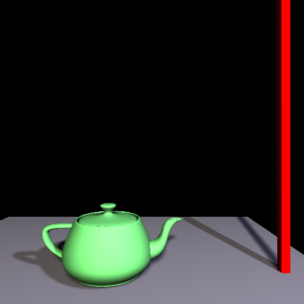

Depth-map Shadows: Shadows from the Scenegraph
#! /usr/bin/env python
We do not import any OpenGL module. The nodes and the engine's
rendering passes are the whole of the API we need.
from OpenGLContext import testingcontext
BaseContext = testingcontext.getInteractive()
from OpenGLContext.scenegraph.basenodes import *
from OpenGLContext.arrays import pi
class TestContext( BaseContext ):
"""Scenegraph shadow tutorial code"""
We start the camera where the previous tutorials put it, close in
on the teapot and looking slightly down at the floor.
initialPosition = (.5,1,3)
def OnInit( self ):
"""Build the scene the engine is going to render"""
Assigning a scenegraph to self.sg is all it takes to hand the
scene to the engine. The context's own Render method is never
called; the rendering passes walk the scenegraph, and the shadow
pass among them draws each shadow-casting light's depth map before
the visible geometry is drawn.
self.sg = sceneGraph(
children = self.createLights() + [
self.createGeometry(),
] + self.createTimers(),
)
The ROUTEs which drive the animation. The TimeSensor emits a
fraction from 0.0 to 1.0 over each of its cycles; the interpolator
turns that fraction into a rotation; the rotation goes to the
Transform holding our first light.
self.sg.addRoute(
'Timer','fraction_changed',
'Light-Orient','set_fraction'
)
self.sg.addRoute(
'Light-Orient','value_changed',
'Light-Orbit','set_rotation'
)
self.addEventHandler( "keypress", name="s", function = self.OnToggleTimer)
Lights that Cast Shadows
A light casts a shadow when its castShadows field is set, which is the
default for every light type. The engine gives each casting light a
shadow map of the kind that suits its shape: a single map for a
spotlight's cone, a cascaded set for a directional light's parallel
rays, and a cube map for a point light, which throws light in every
direction. Nothing here selects between them.
def createLights( self ):
"""Create the lights which will cast our shadows"""
These are the two spotlights of the previous tutorials, with the
same locations, colours and intensities. The first light is the
child of a Transform, which is what the animation rotates: a light
under a Transform is lit and shadowed from where the Transform puts
it, so an orbit is a rotation rather than a position to recompute.
Rotating the Transform by a full turn over a cycle sweeps the light
around a circle of radius 10 in the x,z plane at a height of 5,
aimed at the origin throughout.
return [
Transform(
DEF = 'Light-Orbit',
children = [
SpotLight(
location = [0,5,10],
color = [1,.95,.95],
intensity = 1,
ambientIntensity = 0.10,
direction = [0,-5,-10],
),
],
),
SpotLight(
location = [3,3,3],
color = [.75,.75,1.0],
intensity = .5,
ambientIntensity = .05,
direction = [-3,-3,-3],
),
]
The Scene
The geometry is unchanged from the previous tutorials: a Teapot and a
tall thin Box standing on a flat Box. Every Shape both casts into the
shadow maps and receives what the maps say, with no field to set for
either.
def createGeometry( self ):
"""Create the geometry to be rendered with shadows"""
Sizes and positions are those of the previous tutorials. The
teapot takes the tessellation the distance LOD chooses for its size
and distance, since nothing here needs a particular density.
return Transform(
children = [
Transform(
translation = (0,-.38,0),
children = [
Shape(
DEF = 'Floor',
geometry = Box( size=(5,.05,5)),
appearance = Appearance( material=Material(
diffuseColor = (.7,.7,.7),
shininess = .8,
ambientIntensity = .1,
)),
),
],
),
Transform(
translation = (0,0,0),
children = [
Shape(
DEF = 'Tea',
geometry = Teapot( size = .5 ),
appearance = Appearance(
material = Material(
diffuseColor =( .5,1.0,.5 ),
ambientIntensity = .2,
shininess = .5,
),
),
)
],
),
Transform(
translation = (2,3.62,0),
children = [
Shape(
DEF = 'Pole',
geometry = Box( size=(.1,8,.1) ),
appearance = Appearance(
material = Material(
diffuseColor =( 1.0,0,0 ),
ambientIntensity = .4,
shininess = 0.0,
),
),
)
],
),
],
)
Animation
The light takes eight seconds to travel once around the scene, which is
two nodes and two ROUTEs. The TimeSensor is the clock, looping for as
long as the scene is displayed, and the OrientationInterpolator turns
its fraction into a rotation about the y axis. The key values are the
quarter turns; the interpolator produces the angles in between.
def createTimers( self ):
"""Create the animation nodes which orbit our first light"""
return [
TimeSensor(
DEF = 'Timer',
cycleInterval = 8.0,
loop = True,
),
OrientationInterpolator(
DEF = 'Light-Orient',
key = [0,.25,.5,.75,1.0],
keyValue = [
0,1,0,0,
0,1,0,pi/2,
0,1,0,pi,
0,1,0,3*pi/2,
0,1,0,0,
],
),
]
The "s" key pauses and restarts the orbit, which is how you get a
still shadow to look at. The TimeSensor's Timer for this context is
what runs it, so that is what we pause.
def OnToggleTimer( self, event ):
"""Allow the user to pause/restart the animation"""
timer = self.sg.getDEF( 'Timer' ).getTimer( self )
if timer.active:
timer.pause()
else:
timer.resume()
if __name__ == "__main__":
TestContext.ContextMainLoop(
size = (512,512),
)
Shadows have a small number of controls, all of them optional:
- OPENGLCONTEXT_SHADOWS=0 renders the same scene without shadows, which is the quickest way to see what the pass is contributing
- OPENGLCONTEXT_SHADOWS_SOFT=1 gives spot lights a penumbra that widens with the distance from whatever cast it
- a light's shadowMapResolution field sets the size of its own map, and shadowBias the depth nudge that keeps a surface from shadowing itself
The
shadow documentation
describes what each of those
does and what it costs, and tests/shadow_demo.py puts all three light
types in one scene with the occluders and the lights moving.
Shadows from the Scenegraph
